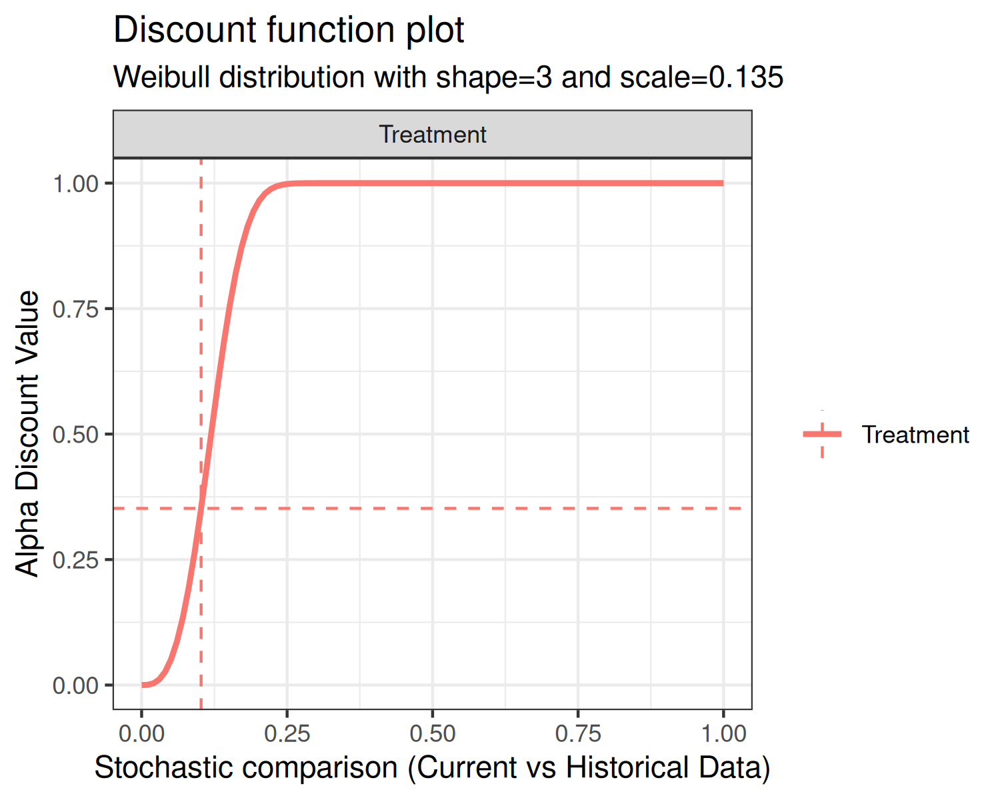
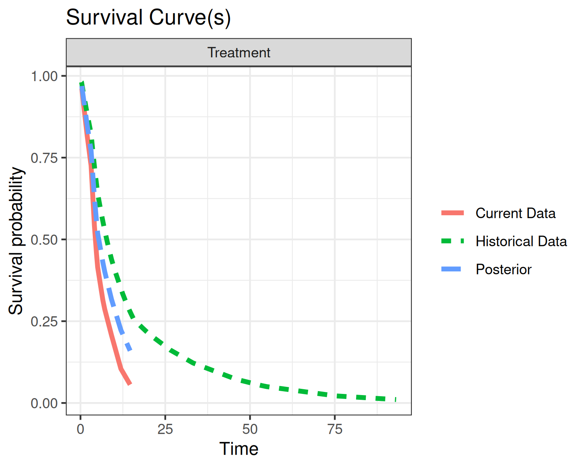
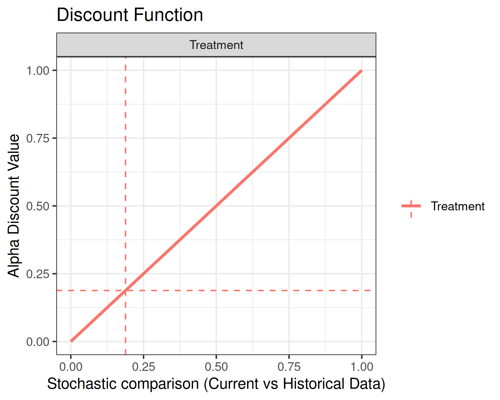

Survival Outcome Estimation with bayesDP
Donnie Musgrove
2026-06-25
Source:vignettes/bdpsurvival-vignette.Rmd
bdpsurvival-vignette.RmdIntroduction
The purpose of this vignette is to introduce the
bdpsurvival function. bdpsurvival is used for
estimating posterior samples in the context of right-censored data for
clinical trials where an informative prior is used. The underlying model
is a piecewise exponential model that assumes a constant hazard rate for
each of several sub-intervals of the time to follow-up. In the parlance
of clinical trials, the informative prior is derived from historical
data. The weight given to the historical data is determined using what
we refer to as a discount function. There are three steps in carrying
out estimation:
Estimation of the historical data weight, denoted , via the discount function
Estimation of the posterior distribution of the current data, conditional on the historical data weighted by
If a two-arm clinical trial, estimation of the posterior treatment effect, i.e., treatment versus control
Throughout this vignette, we use the terms current,
historical, treatment, and
control. These terms are used because the model was
envisioned in the context of clinical trials where historical data may
be present. Because of this terminology, there are 4 potential sources
of data:
Current treatment data: treatment data from a current study
Current control data: control (or other treatment) data from a current study
Historical treatment data: treatment data from a previous study
Historical control data: control (or other treatment) data from a previous study
If only treatment data is input, the function considers the analysis a one-arm trial. If treatment data + control data is input, then it is considered a two-arm trial.
Piecewise Exponential Model Background
Before we get into our estimation scheme, we will briefly describe the piecewise exponential model. First, we partition the time duration into intervals with cutpoints (or breaks) . The th interval is defined as . Then, we let denote the hazard rate of the th interval. That is, we assume that the hazard rate is piecewise constant.
Now, let be an event indicator for the th subject in the th interval. That is, if the endpoint occurred in the th interval, otherwise . Let denote the exposure time of the th subject in the th interval.
Let be the number of episodes that occurred in interval , and let be the total exposure time within interval . Then, the th hazard rate is estimated as where and are the prior shape and rate parameters of a gamma distribution. The survival probability can be estimated as where is the piecewise exponential cumulative distribution function.
In the case where a covariate effect is present, a slightly different
approach is used. In the bdpsurvival function, a covariate
effect arises in the context of a two-arm trial where the covariate of
interest is the treatment indicator, i.e., treatment vs. control. In
that case, we assume a Poisson glm model of the form
where
is a treatment indicator for the
th
subject. In this context,
is the
hazard rate between the treatment and control arms. With the Poisson
glm, we use an approximation to estimate
conditional on each
.
Suppose we estimate hazard rates for the treatment and controls arms
independently, denoted
and
,
respectively. That is
and
where
and
denote the number of events occurring in interval
for the treatment and control arms, respectively, and
and
denote the total exposures times in interval
for the treatment and control arms, respectively. Then, an approximation
of the log-hazard rate
is carried out as follows:
This estimate of
is a normal approximation to the estimate under a Poisson glm.
Currently, the variance term
is estimated empirically by calculating the variance of the posterior
draws. The empirical variance approximates the theoretical variance
under a normal approximation of
Estimation of the historical data weight
In the first estimation step, the historical data weight is estimated. In the case of a two-arm trial, where both treatment and control data are available, an value is estimated separately for each of the treatment and control arms. Of course, historical treatment or historical control data must be present, otherwise is not estimated for the corresponding arm.
When historical data are available, estimation of is carried out as follows. Let and denote the the event indicator and event time or censoring time for the th subject in the th interval of the current data, respectively. Similarly, let and denote the the event indicator and event time or censoring time for the th subject in the th interval of the historical data, respectively. Let and denote the shape and rate parameters of a gamma distribution, respectively. Then, the posterior distributions of the th piecewise hazard rates for current and historical data, under vague (flat) priors are
respectively, where , , , and . The next steps are dependent on whether a one-arm or two-arm analysis is requested.
Estimation under a one-arm analysis
Under a one-arm analysis, the comparison of interest is the survival probability at user-specified time . Let and be the posterior survival probabilities for the current and historical data, respectively. Then, we compute the posterior probability that the current survival is greater than the historical survival , where and collect and , respectively.
Estimation under a two-arm analysis
Under a two-arm analysis, the comparison of interest is the hazard ratio of current vs. historical data. We estimate the log hazard ratio as described previously and compute the posterior probability that as .
Finally, for a discount function, denoted , is computed as where may be one or more parameters associated with the discount function and scales the weight by a user-input maximum value. More details on the discount functions are given in the discount function section below.
There are several model inputs at this first stage. First, the user
can select fix_alpha=TRUE and force a fixed value of
(at the alpha_max input), as opposed to estimation via the
discount function. Next, a Monte Carlo estimation approach is used,
requiring several samples from the posterior distributions. Thus, the
user can input a sample size greater than or less than the default value
of number_mcmc=10000. Next, the Beta rate parameters can be
changed from the defaults of
(a0 and b0 inputs).
An alternate Monte Carlo-based estimation scheme of
has been implemented, controlled by the function input
method="mc". Here, instead of treating
as a fixed quantity,
is treated as random. Because each Monte Carlo iteration recomputes the
comparison probability from that iteration’s posterior draws, the
resulting sequence of
values can exhibit noticeable Monte Carlo variability. For a one-arm
analysis, let
denote the posterior probability. Then,
is computed as
where
is the
th
quantile of a standard normal (i.e., the pnorm R function).
Here,
and
are estimates of the variances of
and
,
respectively. Next,
is used to construct
via the discount function. Since the values
and
are computed at each iteration of the Monte Carlo estimation scheme,
is computed at each iteration of the Monte Carlo estimation scheme,
resulting in a distribution of
values.
For a two-arm analysis, let denote the posterior probability. Then, is computed as
where is the th quantile of a standard normal. Here, and are estimates of the variances of and , respectively. Next, is used to construct via the discount function. Since the values and are computed at each iteration of the Monte Carlo estimation scheme, is computed at each iteration of the Monte Carlo estimation scheme, resulting in a distribution of values.
Discount function
There are currently three discount functions implemented throughout
the bayesDP package. The discount function is specified
using the discount_function input with the following
choices available:
identity(default): Identity.weibull: Weibull cumulative distribution function (CDF);scaledweibull: Scaled Weibull CDF;
First, the identity discount function (default) sets the discount weight .
Second, the Weibull CDF has two user-specified parameters associated
with it, the shape and scale. The default shape is 3 and the default
scale is 0.135, each of which are controlled by the function inputs
weibull_shape and weibull_scale, respectively.
The form of the Weibull CDF is
The third discount function option is the Scaled Weibull CDF. The
Scaled Weibull CDF is the Weibull CDF divided by the value of the
Weibull CDF evaluated at 1, i.e.,
Similar to the Weibull CDF, the Scaled Weibull CDF has two
user-specified parameters associated with it, the shape and scale, again
controlled by the function inputs weibull_shape and
weibull_scale, respectively.
Using the default shape and scale inputs, each of the discount
functions are shown below.


In each of the above plots, the x-axis is the stochastic comparison between current and historical data, which we’ve denoted . The y-axis is the discount value that corresponds to a given value of .
An advanced input for the plot function is print. The
default value is print = TRUE, which simply returns the
graphics. Alternately, users can specify print = FALSE,
which returns a ggplot2 object. Below is an example using
the discount function plot:

Estimation of the posterior distribution of the current data, conditional on the historical data
The posterior distribution is dependent on the analysis type: one-arm or two-arm analysis.
Estimation under a one-arm analysis
With
in hand, we can now estimate the posterior distributions of the hazards
so that we can estimate the survival probability as described
previously. Using the notation of the previous sections, the posterior
distribution is
At this model stage, we have in hand
number_mcmc simulations from the augmented posterior
distribution and we then generate posterior summaries.
Estimation under a two-arm analysis
Again, under a two-arm analysis, and with
in hand, we can now estimate the posterior distribution of the log
hazard rate comparing treatment and control. Let
and
denote the hazard associated with the treatment and control data for the
th
interval, respectively. Then we augment each of the treatment and
control data by the weighted historical data as
and
respectively. We then construct the log
hazard ratio
using the estimates of
and
,
as described previously. At this model stage, we have in hand
number_mcmc simulations from the augmented posterior
distribution and we then generate posterior summaries.
Inputting Data
Data for bdpsurvival is input via data frame(s) that
must have certain columns. Though bdpsurvival supports
analyses with no historical data, other packages/functions should be
used.
To carry out an analysis using historical data, two data frames need
to be constructed: (1) current data, input via data; and
(2) historical data, input via data0. The analysis type,
i.e., one-arm vs. two-arm, is controlled via the right-hand-side (RHS)
of the formula input.
Suppose we have data frames with matching column names. The survival
times are stored in the time column while the event
indicator is stored in the status column. Then, the formula
input Surv(time, status) ~ 1 specifies a one-arm treatment.
As long as the term treatment does not appear on the RHS of
the formula, the analysis will be one-arm.
Now, suppose we desire a two-arm analysis. Then, the current and
historical data frames must contain a column named exactly
treatment. The treatment column should be binary and
indicates treatment and control observations. Now, the formula input
Surv(time, status) ~ treatment specifies a two-arm
treatment.
Examples
One-arm trial
To demonstrate a one-arm trial, we will simulate a small survival dataset from an exponential distribution. For ease of exposition, we will assume that there are no censored observations.
set.seed(42)
# Simulate survival times for current and historical data
surv_1arm <- data.frame(status = 1,
time = rexp(10, rate=1/10))
# Simulate survival times for historical data
surv_1arm0 <- data.frame(status = 1,
time = rexp(50, rate=1/11))In this example, we’ve simulated current survival times from an
exponential distribution with rate 1/10 and historical
survival times from an exponential distribution with rate
1/11; status = 1 for all observations,
implying no times are censored. With our data frame constructed, we can
now fit the bdpsurvival model. Since this is a one-arm
trial, we will request the survival probability at
surv_time=5. Thus, estimation using the default model
inputs is carried out:
set.seed(42)
fit1 <- bdpsurvival(Surv(time, status) ~ 1,
data = surv_1arm,
data0 = surv_1arm0,
surv_time = 5,
method = "fixed")
print(fit1)##
## One-armed bdp survival
##
##
## n events surv_time median lower 95% CI upper 95% CI
## 10 10 5 0.5259 0.3179 0.7355The print method displays the median survival
probability of 0.5259 and the 95% lower and upper interval
limits of 0.3179 and 0.7355, respectively. The
summary method is implemented as well. For a one-arm trial,
the summary outputs a survival table for the current data as
follows:
summary(fit1)##
## One-armed bdp survival
##
## Stochastic comparison (p_hat) - treatment (current vs. historical data): 0.188
## Discount function value (alpha) - treatment: 0.188
##
## Current treatment - augmented posterior summary:
## time n.risk n.event survival std.err lower 95% CI upper 95% CI
## 0.3819 23 1 0.9688 0.0149 0.9323 0.9894
## 1.9834 22 1 0.8483 0.0656 0.6948 0.9464
## 2.8349 21 1 0.7905 0.0860 0.5942 0.9243
## 3.1278 20 0 0.7715 0.0921 0.5631 0.9168
## 3.1398 13 1 0.7699 0.0919 0.5619 0.9143
## 4.1013 12 1 0.6294 0.0938 0.4360 0.8006
## 4.7318 11 1 0.5551 0.1037 0.3502 0.7543
## 5.0666 10 0 0.5189 0.1088 0.3096 0.7311
## 6.6090 6 1 0.4294 0.0992 0.2425 0.6301
## 7.1486 5 1 0.4016 0.0990 0.2194 0.6074
## 9.1584 4 0 0.3165 0.1016 0.1424 0.5365
## 11.9160 2 1 0.2230 0.0823 0.0933 0.4091
## 14.6363 1 1 0.1599 0.0759 0.0513 0.3425In the above output, in addition to a survival table, we can see the
stochastic comparison between the current and historical data of
0.188 as well as the weight, alpha, of 0.188
applied to the historical data. Here, the weight applied to the
historical data is low since the stochastic comparison suggests that the
current and historical data are not similar.
Suppose that we would like to apply full weight to the historical
data. This can be accomplished by setting alpha_max=1 and
fix_alpha=TRUE as follows:
set.seed(42)
fit1a <- bdpsurvival(Surv(time, status) ~ 1,
data = surv_1arm,
data0 = surv_1arm0,
surv_time = 5,
alpha_max = 1,
fix_alpha = TRUE,
method = "fixed")
print(fit1a)##
## One-armed bdp survival
##
##
## n events surv_time median lower 95% CI upper 95% CI
## 10 10 5 0.6041 0.4762 0.72Now, the median survival probability shifts upwards towards the historical data.
Many of the the values presented in the summary and
print methods are accessible from the fit object. For
instance, alpha is found in
fit1a$posterior_treatment$alpha_discount and
p_hat is located at
fit1a$posterior_treatment$p_hat. The augmented survival
probability and CI are computed at run-time. The results can be
replicated as:
survival_time_posterior <- ppexp(5,
fit1a$posterior_treatment$posterior_hazard,
cuts=c(0,fit1a$args1$breaks))
surv_augmented <- 1-median(survival_time_posterior)
CI95_augmented <- 1-quantile(survival_time_posterior, prob=c(0.975, 0.025))Here, we first compute the piecewise exponential cumulative
distribution function using the ppexp function. The
ppexp function requires the survival time, 5
here, the posterior draws of the piecewise hazards, and the cuts points
of the corresponding intervals.
Finally, we’ll explore the plot method.
plot(fit1, type="survival")
plot(fit1, type="discount")
The top plot displays three survival curves. The green curve is the survival of the historical data, the red curve is the survival of the current event rate, and the blue curve is the survival of the current data augmented by historical data. Since we gave full weight to the historical data, the augmented curve is “in-between” the current and historical curves.The bottom plot displays the discount function (solid curve) as well
as alpha (horizontal dashed line) and p_hat
(vertical dashed line). In the present example, the discount function is
the identity.
Two-arm trial
On to two-arm trials. In this package, we define a two-arm trial as an analysis where a current and/or historical control arm is present. Suppose we have the same treatment data as in the one-arm example, but now we introduce control data. Again, we will assume that there is no censoring present in the control data:
set.seed(42)
# Simulate survival times for treatment data
time_current_trt <- rexp(10, rate=1/10)
time_historical_trt <- rexp(50, rate=1/11)
# Simulate survival times for control data
time_current_cntrl <- rexp(10, rate=1/12)
time_historical_cntrl <- rexp(50, rate=1/12)
# Combine simulated data into data frames
surv_2arm <- data.frame(treatment = c(rep(1,10),rep(0,10)),
time = c(time_current_trt, time_current_cntrl),
status = 1)
surv_2arm0 <- data.frame(treatment = c(rep(1,50),rep(0,50)),
time = c(time_historical_trt, time_historical_cntrl),
status = 1)In this example, we’ve simulated current and historical control
survival times from exponential distributions with rate
1/12. Note how the data frames have been constructed; we’ve
taken care to ensure that the current/historical and treatment/control
indicators line up properly. With our data frame constructed, we can now
fit the bdpsurvival model. Before proceeding, it is worth
pointing out that the discount function is applied separately to the
treatment and control data. Now, let’s carry out the two-arm analysis
using default inputs:
set.seed(42)
fit2 <- bdpsurvival(Surv(time, status) ~ treatment,
data = surv_2arm,
data0 = surv_2arm0,
method = "fixed")
print(fit2)##
## Two-armed bdp survival
##
## data:
## Current treatment: n = 23, number of events = 10
## Current control: n = 24, number of events = 10
## Stochastic comparison (p_hat) - treatment (current vs. historical data): 0.1264
## Stochastic comparison (p_hat) - control (current vs. historical data): 0.0618
## Discount function value (alpha) - treatment: 0.1264
## Discount function value (alpha) - control: 0.0618
##
## coef exp(coef) se(coef) lower 95% CI upper 95% CI
## treatment -0.151 0.8599 0.4122 -0.9542 0.6606The print method of a two-arm analysis is largely
different than a one-arm analysis (with a two-arm analysis, the
summary method is identical to print). First,
we see the stochastic comparisons reported for both the treatment and
control arms. As seen previously, the stochastic comparison between the
current and historical data for the treatment data is relatively small
at 0.1264, giving a low historical data weight of
0.1264. Similarly, the stochastic comparison between the
current and historical data for the control data is relatively low at
0.0618, giving a low historical data weight of
0.0618. Finally, the presented coef value (and
associated interval limits) is the log hazard ratio between the
augmented treatment data and the augmented control data computed as
log(treatment) - log(control).